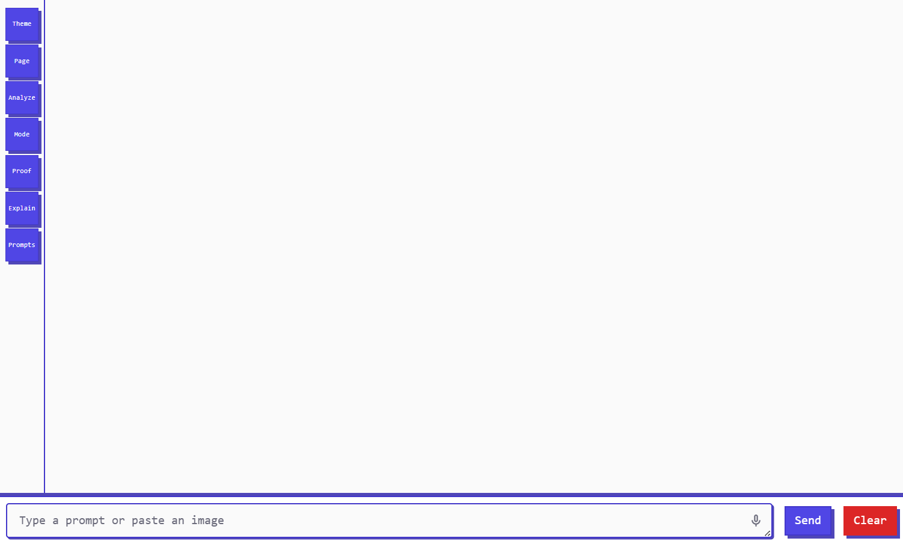

Install
Add Prompt Paul to Chrome and keep AI assistance inside your current workflow.
Context-aware AI in the browser
A Chrome extension for AI answers on selected text, page context, and provider-supported media, right in your current tab.
Prompt Paul answers questions about what you already have on screen: selected text, page content, provider-supported images, audio, and video, or PDF text. It works from a side panel, so you stay in the tab you started in, with optional web grounding and guarded page actions when you want them.

Add Prompt Paul to Chrome and keep AI assistance inside your current workflow.
Highlight text, media, or page content and choose the action you need.
Receive concise analysis, proofreading, explanation, or custom instruction output.
Keep the conversation beside your page; optional Act can work across tabs owned by its current run.
What it does
Prompt Paul is designed around the small decisions that happen while reading, writing, debugging, researching, and drafting. It keeps the loop short and leaves the page where it belongs.
Analyze, explain, proofread, summarize, or run a custom prompt against selected text from the context menu or side panel.
See selected text, page content, and media as removable context chips beside the input. Detach one context without losing the conversation, then use the quick actions that fit.
Load the current page into the side panel, ask follow-up questions, and keep the page context attached to the conversation. Reddit threads, GitHub repositories, issues, pull requests, RSS/Atom feeds, and YouTube transcripts get structured extraction. Page-aware quick actions adapt to YouTube, GitHub, Gmail, Google Docs and Sheets, news, arXiv, PDFs, and generic pages, while long pages are trimmed to fit the model context.
For API-key or Codex connections, turn on Web when a current or verifiable answer would benefit from live Brave Search results. Prompt Paul may search, then adds a first-party Sources section to the answer; the model must support function calling.
For API-key or Codex connections, or a Hermes gateway with client-tool support, turn on Act to let Prompt Paul inspect and use standard controls and approved links on the current page. Approvals, fresh snapshots, and hard blocks keep passwords, payments, destructive actions, and JavaScript out of scope. A run may use up to twelve tabs that it owns, but cannot control arbitrary existing tabs. Every mutation returns a verification receipt, and safe human-only steps pause for a Manual step card.
Work with images, video, audio, PDF text, and dropped documents, depending on the provider and model. Codex connections in this release support text and images; video and audio require a compatible API profile. Enable the relevant media modality in Options, then right-click media or load a PDF from the Page control. You can also drop a .txt, .md, .markdown, .csv, or .json file into the composer. Prompt Paul converts documents locally into bounded text context and never uploads the raw file.
Store repeatable workflows for emails, meeting notes, captions, research summaries, code explanations, product descriptions, and support replies.
Use configured custom HTTP(S) tools or OpenClaw-compatible Agent Skills when a task needs
more than a plain response. These Prompt Paul tools are available to API-key and Codex
connections; Hermes connections use tools owned by the Hermes gateway. Invoke built-in
skills with /skills, /skill <name>, or a direct
/<skill-name> command.
Connect a ChatGPT subscription with Sign in with ChatGPT. Prompt Paul creates a local Codex profile, discovers supported models, and keeps OAuth credentials out of backups.
Stop a run while it streams, then Retry, Edit, or Continue from the response. Continue builds on the previous answer instead of starting a disconnected chat.
Dictate prompts into the composer with the browser's speech-recognition support when available and permitted. Voice input is optional and depends on browser microphone access.
On supported Outlook web pages, select text in a message or editor to reveal an in-page Prompt Paul button that sends the selection to the side panel. It does not edit or send the email for you.
Enable a compact, top-centered quick-action surface on supported web pages for Open chat, All actions, Summarize page, Explain selection, or Settings. It is off by default, isolated with Shadow DOM, does not change page layout, and is not an OS-wide overlay.
Workflow
Use the context menu, enable media types in Options before right-clicking media, load a PDF or page, or open the side panel from the toolbar.
Pick a saved instruction, use a contextual quick action, enable Web or Act when needed, or ask a one-off question.
Return to the page with a concise answer, proof, summary, source list, or next step, plus recovery controls if you need another pass.
Compatible providers
Prompt Paul works with OpenAI-compatible HTTP(S) endpoints, the official Anthropic API format on Anthropic's API domain, local model setups, and a Codex subscription connection. The named services below are examples of compatible routes, not bundled provider accounts; model support, pricing, and multimodal capability vary. Hermes is available as a separate gateway integration.
Privacy
Prompt Paul keeps configuration in Chrome storage and only sends content to your chosen LLM endpoint when you explicitly ask it to process something.
Prompt Paul takes privacy seriously, and this policy explains what information it collects, how it uses that information, and the steps it takes to protect it.
Optional analytics collect only coarse event labels, such as instruction name, model name, and tool names, plus a rotating pseudonymous instance ID. Analytics are disabled by default.
Prompt Paul sends selected text, page content, media, PDF text, or dropped document text to the model endpoint you configure only when you explicitly invoke processing. Documents are converted locally into bounded text before sending. With Web enabled, a model-generated search query may also be sent to Brave Search. With Act enabled, bounded DOM metadata from the current page may be sent for that run.
We do not send page URLs, page titles, page content, API keys, or prompt text to the extension's analytics. We do not sell or share extension analytics data for marketing. This website separately loads Google Analytics and Microsoft Clarity for site measurement; those services may process browsing and interaction data under their own policies. Your configured model provider and Brave Search receive only the content needed for the feature you invoke; review their terms and retention policies separately.
The extension bounds user-provided content, keeps provider credentials out of chat messages and analytics, and applies safety checks to page actions. No method of transmission or storage is 100% secure, so we cannot guarantee absolute security.
You can disable extension analytics, Web grounding, or Act separately in Prompt Paul Options. You can also remove saved API keys and uninstall the extension. Content processing is explicit, while Web and Act are separate opt-in permissions. Website analytics are controlled separately by the analytics services used on this site.
We may update this Privacy Policy from time to time. Any changes will be posted on this page with an updated "Last Updated" date.
If you have any questions or concerns about this Privacy Policy, please contact us via the Chrome Web Store listing page.
Thank you for using Prompt Paul.
Questions & FAQ
The short version: Prompt Paul is for people who want AI help close to the text they are already working with.
Only the selected text, page content, media, documents, or instruction you explicitly choose to process, plus your prompt. Your API key authorizes the request; it is not included as prompt content.
Yes. Drop .txt, .md, .markdown, .csv,
or .json files into the composer and Prompt Paul converts them locally into
bounded text context (up to 200,000 characters per document) without uploading the raw
file.
API keys are stored in Chrome storage on your device and used to authorize requests to your configured endpoint. They are not included in prompt content; the separate Brave key is used only for an enabled web-search request.
Yes, if they expose an OpenAI-compatible endpoint. LM Studio and similar local setups can work when configured correctly. API profiles still require a non-empty API key field in the extension, even when a local server does not use authentication.
Yes. Custom instructions can be saved and reused for common workflows like email replies, summaries, captions, research notes, and code explanations.
Yes. API-key and Codex connections support configured custom HTTP(S) tools and
OpenClaw-compatible Agent Skills. Hermes connections use Hermes-owned server tools;
Prompt Paul's custom HTTP tools are not registered for Hermes runs.
Skills can be listed with /skills or invoked with /skill <name>
and direct /<skill-name> commands.
Yes, for API-key or Codex connections when you configure a Brave Search API key and enable Web. Search is optional and model-directed, so Prompt Paul may answer directly or return a cited Sources section. The selected model must support function calling; Brave pricing and quotas apply.
For API-key or Codex connections, or a compatible Hermes gateway, Act is a separate default-off permission for bounded inspect, click, fill, select, scroll, and approved link actions. Hermes must advertise client-tool support. State-changing actions ask for approval by default and return a verification receipt, so unverified changes are never blindly repeated. Safe human-only steps can pause for a Manual step card you resume explicitly. Passwords, payments, destructive actions, and JavaScript remain blocked. A run may use up to twelve tabs it owns, but cannot control arbitrary existing tabs.
Top Notch is an optional browser-page quick-action surface. Enable it in Options to open chat, the full action menu, page summarization, selection explanation, or Settings from a compact top-centered control. It is off by default, does not change page layout, and does not appear as an OS-wide desktop overlay.
A Codex connection can use Sign in with ChatGPT. The extension discovers supported models for the connected subscription and keeps its OAuth credentials out of backups.
Extension analytics are opt-in. When enabled, they send coarse event labels such as instruction name, model name, and tool names, plus a rotating pseudonymous instance ID. They do not send page content, URLs, titles, API keys, or prompt text. This website also uses Google Analytics and Microsoft Clarity for website measurement; those services have separate privacy policies.
Send feedback, bug reports, provider notes, or workflow ideas directly by email.